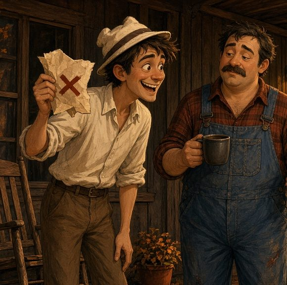

Jang & Tom
The Cookie Conspiracy
A secret bake, a cookie on the cat, and a swap Jang runs like a heist. New: Episode 7.
Listen to Captain Spacey's story. When each scene ends, you choose what happens next. 8 endings. Only one is the true one.
Princeton, 1982. Step into Dr. Elias Thorne’s laboratory: hear his research journal, then grow a living starship in Born Twice.
Listen shows & radio
Audiobooks watch & listen
Play games
Studio paint & art

Paint like the masters
Mix on the palette, load the knife, paint mountains and trees.
Jason's Art
Get the books
Help & info
Collier Entertainment · outdoorsolution@bellsouth.net
Listen
Play
Oil Studio
Mix paint on the palette, load the brush and paint with real artist techniques: palette-knife mountains, fan-brush trees, Half-mix and the hand drawer.
Inside the studio, tap Save to Photos (top right) to share or save your painting.
Read
Thorne’s Lab

The research log of Dr. Elias Thorne, physicist. Personal Laboratory, Princeton, New Jersey, 1982. Jason Collier’s work in progress: new entries appear as the log grows.